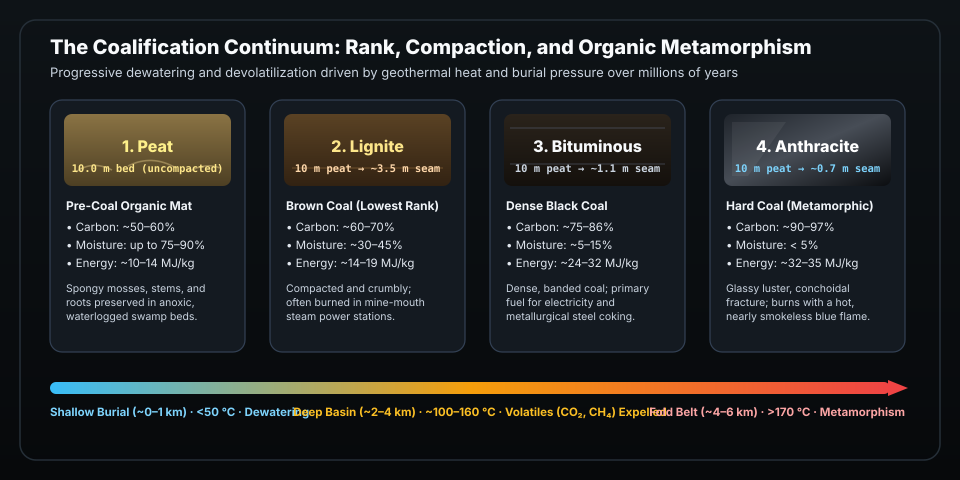
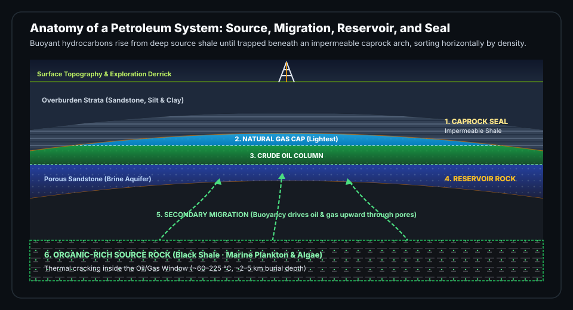

Earth Science · Geologic Time · Energy
How coal, oil & natural gas form
All three fossil fuels begin when dead organic matter is buried faster than decomposers can recycle it. From there, heat, pressure, and time — and which organisms were buried — split the story into three distinct fuels.
The one idea underneath all three fuels
Burial beats decay
Left exposed to oxygen, dead organisms are broken down by fungi and bacteria within years to centuries, returning carbon to the air as CO₂. Fossil fuels only form where organic debris sinks into oxygen-poor mud — a waterlogged peat bog, stagnant lake bed, or anoxic seafloor — and gets sealed beneath accumulating sediment before decay finishes.
Produce
Plants and marine algae capture sunlight and CO₂ to build energy-rich carbon molecules.
Bury
Dead biomass settles into anoxic sediment and is buried faster than microbes can oxidize it.
Cook
Rising overburden pressure and Earth's geothermal heat transform that carbon over millions of years.
Interactive lab 1 · Thermal maturation
Burial Maturation & Hydrocarbon Window Simulator
Drag directly on the sedimentary basin or adjust depth, geothermal gradient, and burial duration to watch how heat and pressure transform buried carbon. Notice how a hotter crust shifts the oil and gas windows shallower.
Tip: Drag vertically inside the basin cross-section or press ▶ Animate Burial to trace a layer sinking 6 km into the crust.
From land plants
Coal: a multi-stage squeeze
Coal forms from terrestrial plants — giant clubmosses, ferns, and woody trees — buried in swampy wetlands. As layers of mud and sand pile overhead, rising pressure and temperature squeeze out water and volatile gases (CO₂ and CH₄), dramatically compacting the seam and concentrating the remaining carbon.

Interactive lab 2 · 10-meter peat squeeze
Peat — Pre-Coal Organic Mat
< 48 °C · 0 – 0.9 kmFrom marine microorganisms
Oil & natural gas: cooked kerogen
Oil and natural gas mostly come from a completely different source: microscopic marine algae and plankton, not land trees. When plankton die, they sink into oxygen-poor seafloor mud and mix with fine clay. Buried miles underground, that organic mud turns into a waxy solid called kerogen. Between roughly 60 °C and 150 °C (the oil window), kerogen cracks into liquid crude oil; deeper and hotter (150–225 °C, the gas window), chains crack further into methane (CH₄).

Interactive lab 3 · Reservoir traps & exploration
Petroleum Trap & Exploration Drill Explorer
A source rock alone cannot make an oil field—hydrocarbons need a porous reservoir to store them and an impermeable seal to stop buoyancy from leaking them to the surface. Choose a geological trap geometry, test fracturing the caprock seal, and click anywhere underground to drill an exploration well.
Tectonic compression folds permeable sandstone into an upward arch beneath an impermeable shale cap.
Crude Oil Reservoir Strike!
Buoyant liquid oil pooled between the gas cap and denser brine water.
Math & deep time · "Buried Sunshine"
Millions of years to cook, centuries to burn
Fossil fuels are literally concentrated ancient sunlight captured by photosynthesis hundreds of millions of years ago. Ecologists estimate that a single liter of modern gasoline represents roughly 25,900 kg of ancient marine plankton or plant matter (Jeffrey Dukes, 2003). Use the sliders to compare formation time against human consumption.
Side by side
Three fuels, three origins
| Fuel | Source material | Main formation era | Formation process |
|---|---|---|---|
| Coal | Land plants (mosses, ferns, trees) | Mostly Carboniferous, ~359–299 Mya | Coalification: peat → lignite → sub-bituminous → bituminous → anthracite |
| Oil | Marine algae & plankton | Mostly Mesozoic, ~252–66 Mya | Anoxic burial → kerogen → "oil window" (~60–150 °C) → upward trap migration |
| Natural gas | Marine plankton, or over-heated oil/coal | Mostly Mesozoic, ~252–66 Mya, or deep burial | Kerogen or cracked oil inside the "gas window" (~150–225 °C) |
Check yourself
Diagnostic knowledge check
1. What essential condition do coal, oil, and natural gas all share at the start of formation?
2. What is the primary biological source of most crude oil and natural gas?
3. Which coal rank has the highest carbon percentage (~90–97%) and formed under the greatest heat and pressure?
4. How does a hotter geothermal gradient (42 °C/km instead of 22 °C/km) affect the oil window?
5. Inside a trapped porous sandstone anticline, why does natural gas sit above crude oil, which sits above salty brine?
6. What happens if a petroleum source rock is buried past ~225 °C?
Go deeper
Explore the sources
Why this is STEAM
One process, five ways of thinking
Trace organic chemistry, geothermal heat, lithostatic pressure, and deep time.
Seismic imaging and borehole logging locate buried anticlines and traps.
Directional drilling, caprock safety, and refining handle high-pressure reservoirs.
Draw clear geological cross-sections showing strata, faults, and fluid contacts.
Invert geothermal gradients to depth and compare million-year timescales to burn rates.